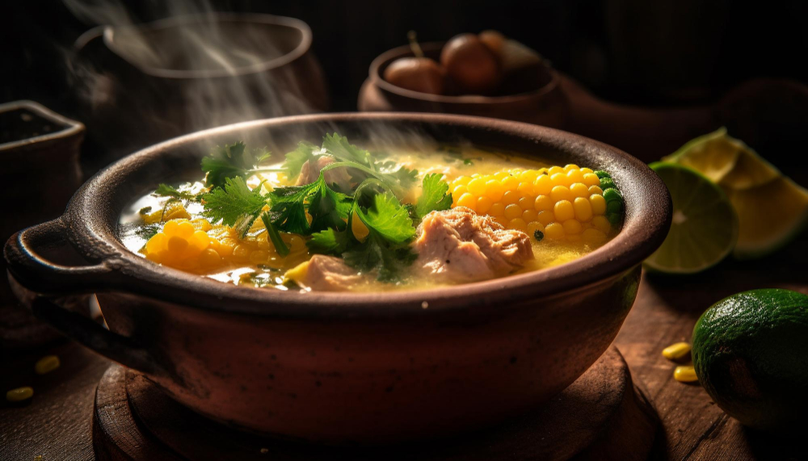

Sancocho

Description
Sancocho Colombiano is a hearty, traditional Colombian stew that brings families together around the table. It’s a rustic dish featuring a rich, savory broth simmered with a mix of meats like chicken, beef, or pork, alongside starchy vegetables such as potatoes, yuca, plantains, and corn on the cob.
Flavored with herbs, garlic, onion, and cilantro, this comforting soup is often enjoyed with a side of white rice and avocado. Each region of Colombia has its variation, but the essence remains the same: a soulful, slow-cooked dish that celebrates home cooking and cultural heritage.
Ingredients
- 1 lb chicken pieces (bone-in, skin-on preferred)
- 1 lb beef stew meat or pork ribs (optional mix)
- 1 tablespoon vegetable oil
- 1 onion, chopped
- 3 cloves garlic, minced
- 2 ears of corn, cut into chunks
- 2 green plantains, peeled and chopped
- 2 medium potatoes, peeled and quartered
- 1 yuca root, peeled and chopped
- 1 chicken or beef bouillon cube
- 8 cups water
- 1/2 teaspoon cumin
- Salt and pepper to taste
- Chopped fresh cilantro (for garnish)
- White rice and avocado (for serving)
Instructions
- In a large pot, heat the vegetable oil over medium heat. Add the chicken (and beef or pork, if using), and brown lightly on all sides.
- Add the chopped onion and garlic; cook for 2–3 minutes until fragrant.
- Pour in the water, bouillon cube, cumin, salt, and pepper. Bring to a boil, then reduce to a simmer. Cover and cook for 30–40 minutes.
- Add the corn, plantains, potatoes, and yuca. Continue to simmer for another 30–40 minutes until all vegetables are tender.
- Taste and adjust seasoning if needed. If the stew becomes too thick, add a bit more water.
- Serve hot, garnished with fresh cilantro, alongside white rice and avocado slices.